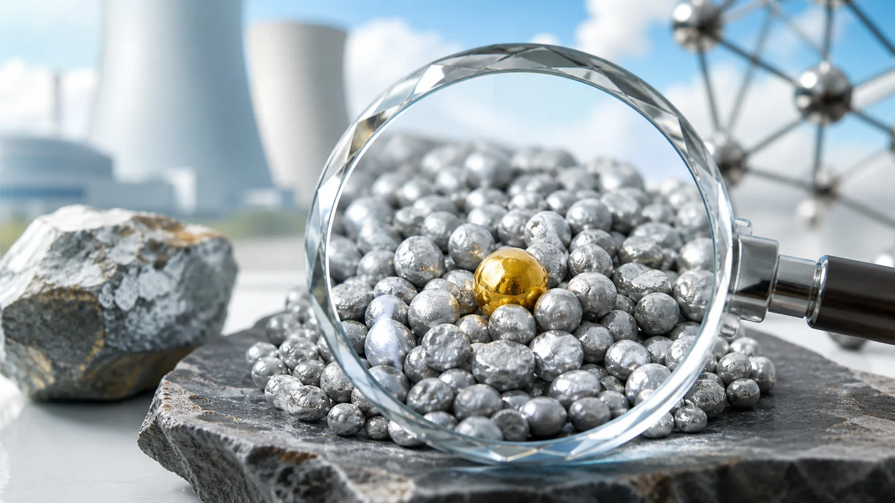
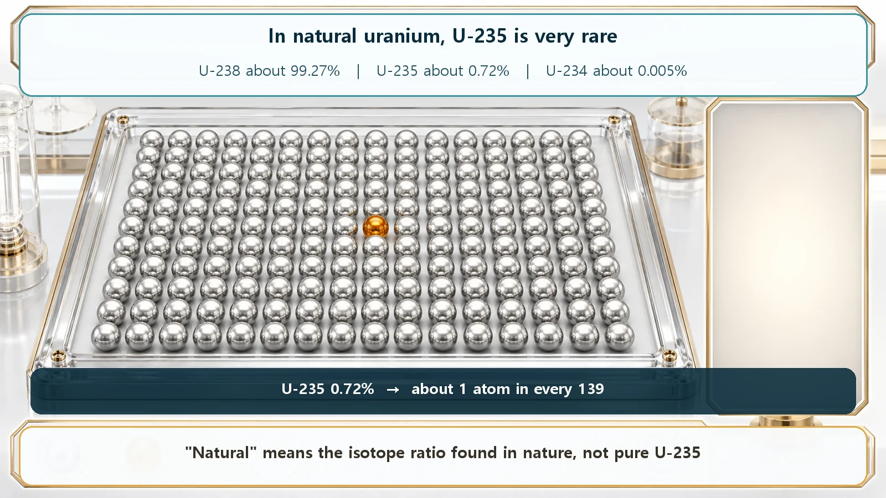
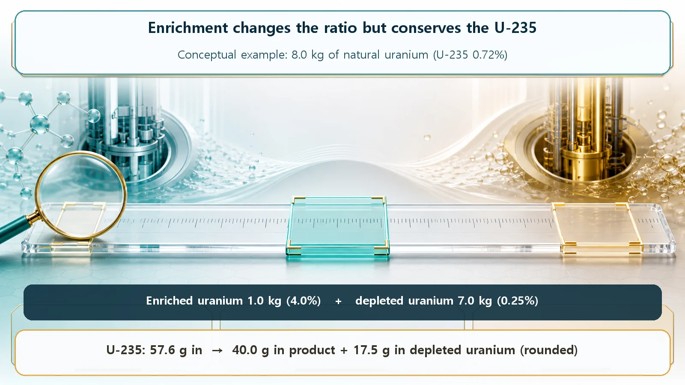

Long-Term Core Behavior & Fuel Cycle · 155
Barely One Grain in a Handful — Natural Uranium vs Enriched Uranium
Natural uranium is mostly U-238; enrichment only raises the U-235 share, and the moderator decides how much enrichment a reactor needs.

Natural uranium, as mined, is only about 0.7% U-235, the readily fissile isotope: roughly 1 atom in 139. Enriched uranium has that share raised; power reactor fuel is low-enriched uranium at about 3–5%, far below the 20% line. Light-water reactors need it because water absorbs neutrons, while heavy-water reactors run on natural uranium.
Ever seen someone panning for gold in a river? Scoop up a pan of sand, swirl it gently in the water, and almost everything is ordinary sand; only once in a long while does a glittering flake of gold turn up. The uranium used in nuclear power is in a surprisingly similar situation. Imagine holding a handful of freshly mined uranium. How many of its atoms actually "do the work"? Remarkably, fewer than one in a hundred: pick out about 140 atoms and only one of them is the useful kind. Let's look at what natural uranium and enriched uranium are, and how they differ.
Not all uranium is the same uranium
First, one thing to get straight. What we call "uranium" is actually a mix of two kinds with different personalities: U-235 and U-238. Both are uranium, and chemically you can't tell them apart at all. The only difference is that each atom weighs very slightly differently (U-238 is heavier by three neutrons). They're like identical twins who differ only a little in weight.
To a reactor, though, the two are worlds apart. U-235 is the "readily fissile" kind: hit by even a single slow neutron, it splits and releases energy. Among naturally occurring uranium, U-235 is practically the only one that splits with such gentle neutrons. U-238, by contrast, rarely splits; it tends to just swallow the neutron. So the "worker" that actually keeps the fire going in a reactor is U-235, while U-238 mostly fills space.
How much of this precious U-235 is in natural uranium? Only about 0.7%. More than 99% is U-238. Put another way, you'd have to pick up about 139 uranium atoms to find a single U-235. Like gold flakes in river sand, it's a rare guest.

Where "natural" and "enriched" part ways
Now the two terms explain themselves.
Natural uranium is uranium just as it comes out of the mine, with about 0.7% U-235. Curiously, this ratio is almost the same in every uranium mine on Earth.
Enriched uranium is uranium whose U-235 share has been raised artificially. Fuel commonly used in power reactors has its U-235 raised to about 3 to 5% and is called low-enriched uranium. Back to the gold-panning picture: what was "1 in 139" becomes roughly "1 in 25," the useful grains packed more densely.
One thing to keep firmly in mind: enrichment doesn't "turn" uranium into a stronger or more dangerous substance. It doesn't become a different element either. It simply raises the share of U-235 among the two kinds that were already mixed together: purely a ratio adjustment. It's a bit like making orange juice concentrate: you don't swap the oranges for another fruit. (Unlike juice, though, nothing is just boiled off; the U-235 share is raised by sorting the atoms.)
Why raise the ratio at all?
Wouldn't it be easier to use uranium as it comes? Why go through enrichment? The answer lies not in the uranium but in the water beside it.
The light-water reactor, the most common type in the world, including in South Korea, uses ordinary water (light water) to slow neutrons down and carry heat away. This water does a good job slowing neutrons, but it also has the awkward habit of swallowing some of them. The workers (U-235) are scarce to begin with, and the water intercepts neutrons on their way to those workers.
In this environment, with only 0.7% U-235, it's hard for the chain reaction to keep itself going; the spark keeps going out before it can light the next one. So the density of workers is raised to 3–5%, keeping the reaction going even when the water intercepts some neutrons. As a bonus, plenty of U-235 lets one load of fuel generate power for longer, so refueling comes less often.
So can't natural uranium be used in a reactor?
It can, and this clears up a common misconception. Natural uranium makes perfectly good reactor fuel, as long as the conditions are right.
Heavy-water reactors such as Canada's CANDU use heavy water instead of ordinary water. Heavy water looks almost the same as ordinary water but absorbs far fewer neutrons. With less interception, the chain reaction can be sustained on 0.7% natural uranium without raising the U-235 share, so heavy-water reactors use natural uranium as is, with no enrichment step.
In short, whether enrichment is needed depends not on the uranium but on which water you use. Light water calls for enriched uranium; heavy water works with natural uranium. Each is a well-matched combination, not a matter of one being superior, just different design choices.
How rich? Power fuel sits at the bottom of the scale
Not all enriched uranium is enriched to the same degree. It is graded by how far the U-235 share has been raised: internationally, uranium with less than 20% U-235 is low-enriched uranium (LEU), and above that it is highly enriched. The power reactor fuel we've been discussing (3–5%) sits far below that 20% line, near the very bottom of the scale. Power plants use just the low enrichment that generation needs, physically optimized for the job.
For reference, uranium and its enrichment are strictly managed under the accounting and monitoring system of the International Atomic Energy Agency (IAEA). This article focuses on the single concept of low-enriched uranium for power generation.
How do you sort out such a tiny difference?
Finally, a word on that tricky sorting. Gold flakes differ from sand in color and are much heavier, so swirling the pan separates them. U-235 and U-238 are chemically identical and can never be separated by chemical reactions. The only handle left is their tiny difference in weight.
So uranium is turned into a gas, uranium hexafluoride, and spun in centrifuges at very high speed. Just as a washing machine's spin cycle flings water outward, the slightly heavier U-238 drifts a little toward the outside and the lighter U-235 a little toward the center. It doesn't happen in one go: hundreds to thousands of these machines are linked in a chain, nudging the U-235 share up bit by bit. Separating near-identical twins by a weight difference of three: no wonder enrichment is such a precise, demanding technology.

Today's takeaways
- Natural uranium, as mined, contains only about 0.7% readily fissile U-235 (about 1 in 139 atoms).
- Enriched uranium has an artificially raised U-235 share; power reactor fuel is usually low-enriched uranium at 3–5%.
- Enrichment doesn't turn uranium into something else or make it more dangerous; it only raises the share of U-235 already present.
- Light-water reactors need enrichment because water absorbs some neutrons; heavy-water reactors run on natural uranium. The moderator decides the enrichment needed.
- Power fuel (3–5%) is far below the low-enriched uranium line (20%), set just for power generation, and the material is managed under international accounting and monitoring.
Two kinds of atoms mixed under one name, and how their ratio is handled is where reactor design and operation begin. Keep that in mind, and the fuel stories ahead will come into much sharper focus.